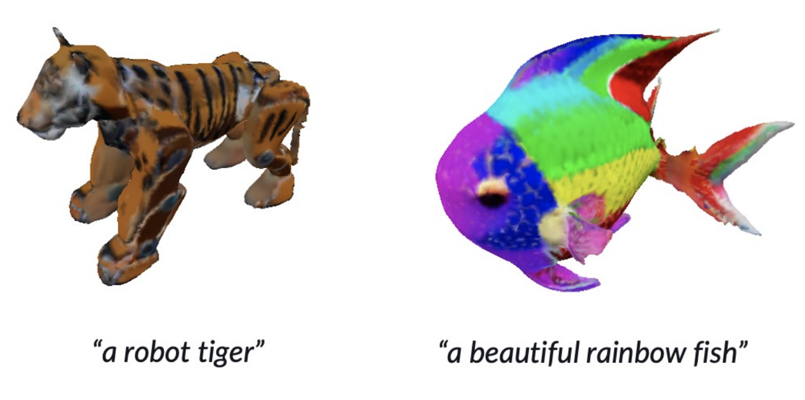

Mahesh Reddy
I am a Researcher at Qualcomm AI Research and working on 3D computer vision and generative AI. I completed my MSc in Computing Science from Simon Fraser University, where I was advised by Prof. Yağız Aksoy. Previously, I was a research intern at Borealis AI and received my MSc in Computer Science from the University of Manitoba, where I was advised by Prof. Yang Wang. Before that, I received my BE in Information Science from VTU, India.Publications

HexaGen3D: StableDiffusion is just one step away from Fast and Diverse Text-to-3D Generation
Antoine Mercier, Ramin Nakhli, Mahesh Reddy, Rajeev Yasarla, Hong Cai, Fatih Porikli, and Guillaume BergerarXiv, 2024
paper

Interactive Editing of Monocular Depth
Obumneme Stanley Dukor, S. Mahdi H. Miangoleh, Mahesh Reddy, Long Mai, and Yağız AksoySIGGRAPH Posters, 2022
interactive editor // webpage // paper


Sentence Guided Temporal Modulation for Dynamic Video Thumbnail Generation
Mrigank Rochan, Mahesh Reddy and Yang WangBritish Machine Vision Conference (BMVC), 2020
paper


Domain Adaptation in Crowd Counting
Mohammad Hossain, Mahesh Reddy, Kevin Cannons, Zhan Xu and Yang WangConference on Robot and Computer Vision (CRV), 2020
paper

One-Shot Scene-Specific Crowd Counting
Mohammad Hossain, Mahesh Reddy, Mehrdad Hosseinzadeh, Omit Chanda and Yang WangBritish Machine Vision Conference (BMVC), 2019
paper

Theses